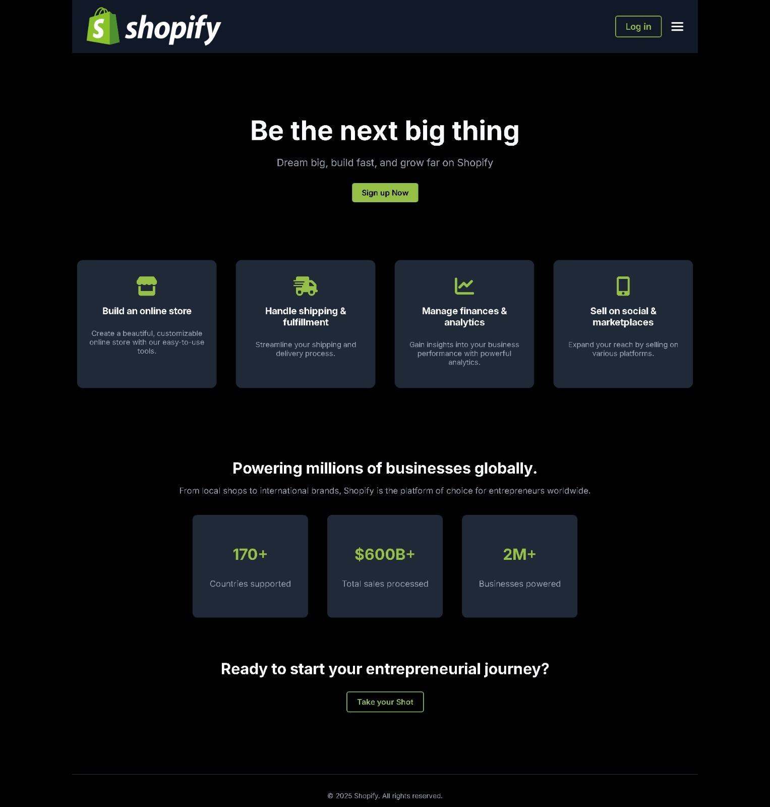

Shopify Dashboard Clone

Description
Shopify Replica is an e-commerce store built with Django, featuring product management, checkout, admin dashboard, and store customization. It mimics Shopify’s UI and functionality for learning and practice.
🛠 Features
- Admin dashboard with store and product management
- Store customization with themes and layout options
- Product management: add, edit, delete products
- Order management and checkout process
- Customer management and user accounts
- Payment gateway integration
- Inventory tracking and analytics
- Responsive design using Tailwind CSS
💻 Tech Stack
- Django
- Python
- HTML, CSS, JavaScript
- SQLite / PostgreSQL
- Tailwind CSS